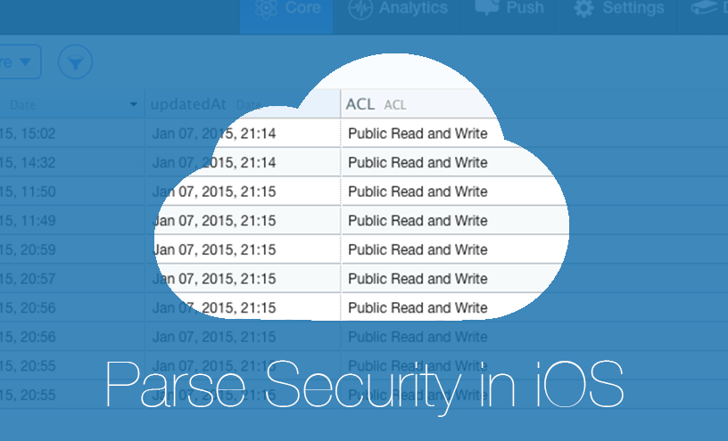
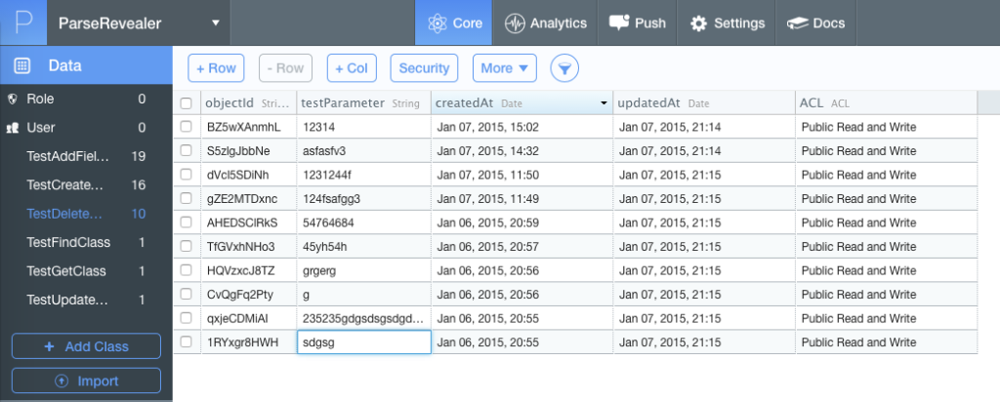
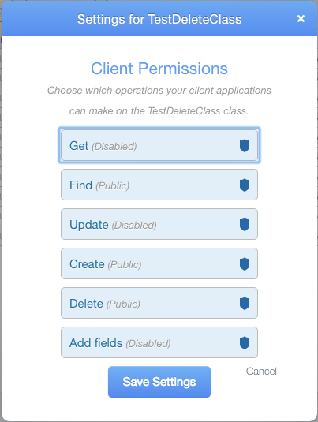
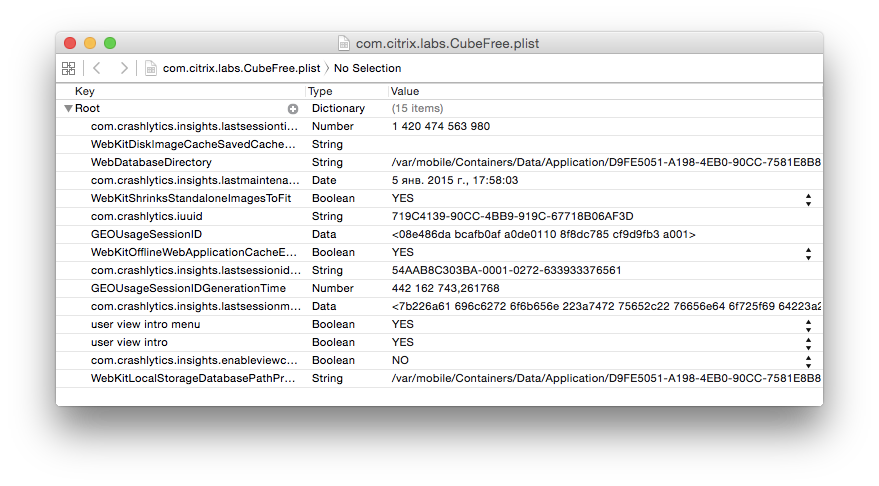
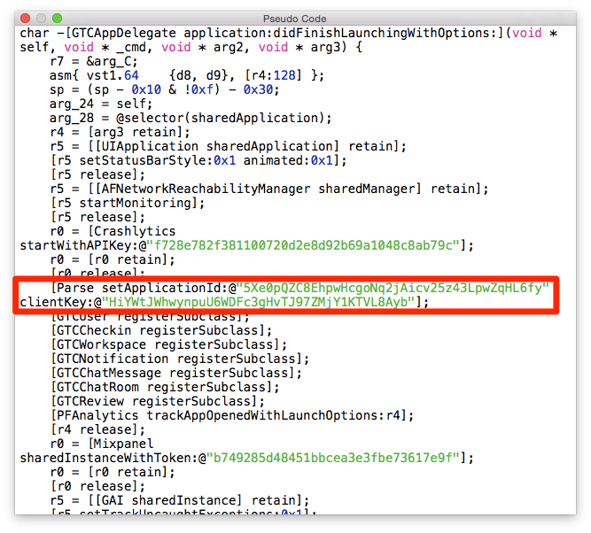
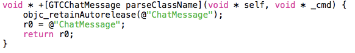
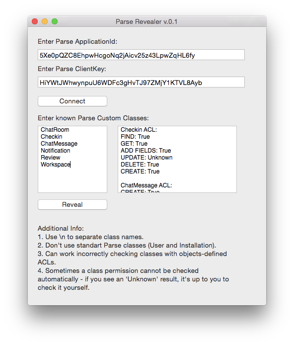
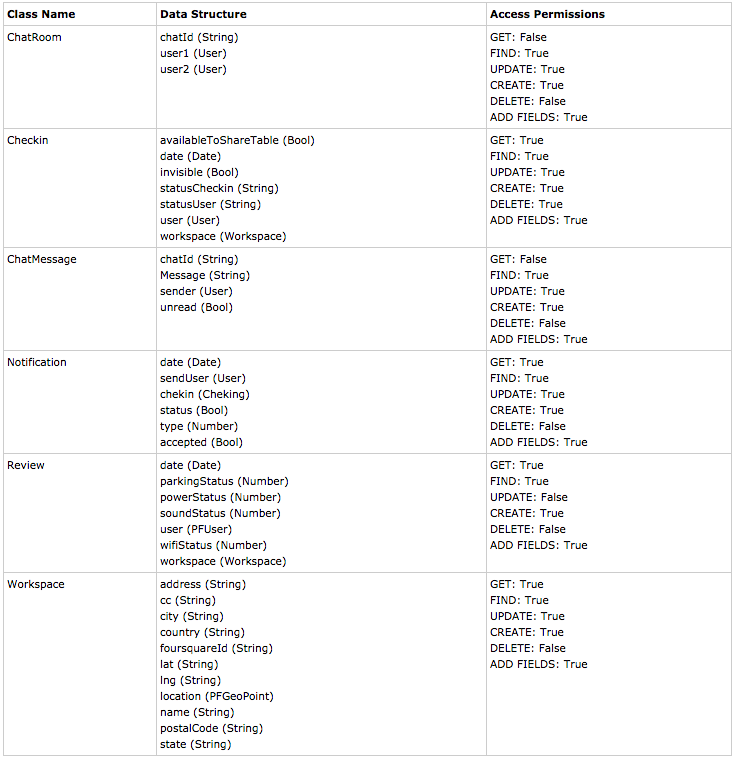
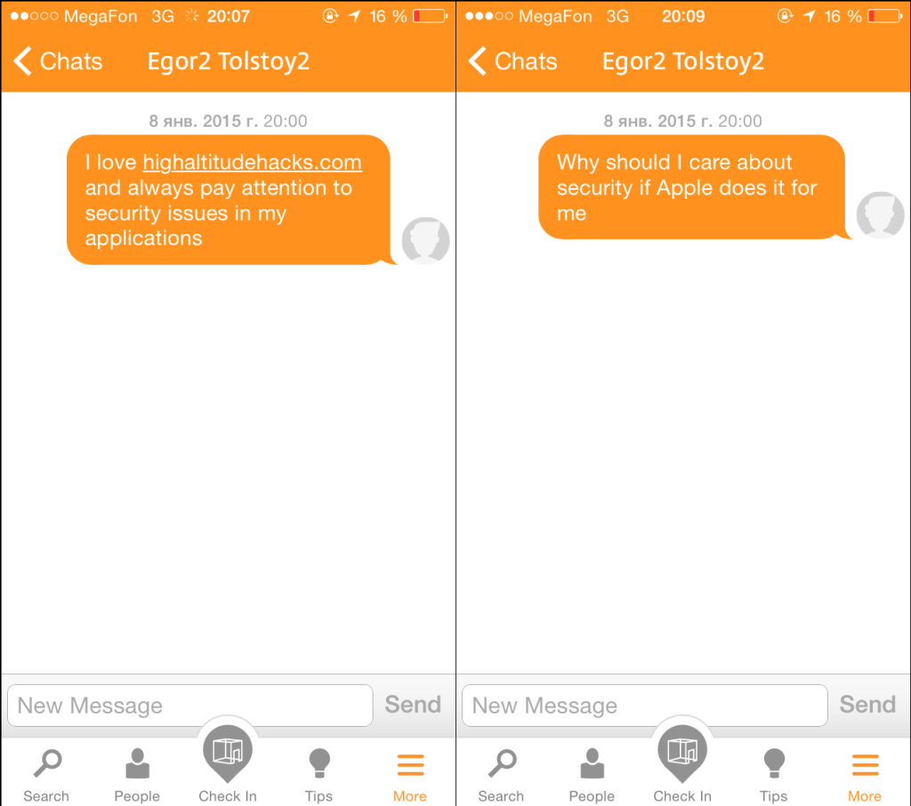

Parse is a wonderful BaaS which helps with setting up backend infrastructure for your mobile application as fast as possible. Maybe just because of this simplicity many developers forget about a number of new security issues and vulnerabilities.

For those who don’t know what this service is, let’s make a brief introduction. Parse provides a lot of useful capabilities to mobile developer: cloud data storage, push notifications, usage statistics and crash logs gathering, code hosting, background jobs and a many other things. Within the boundaries of thes research we are interested in the cloud data storage, named Cloud Core.
All the data in Cloud Core is stored in so called custom classes (ordinary database tables).

You can set a number of different client permissions for each of these classes: GET, FIND, UPDATE, CREATE, DELETE and ADD FIELDS. All of them are Public by default. Of course, most of the developers forget about the need of setting client access permissions once they configure their tables.

I’ve closely faced Parse during one of my work projects and spent a lot of time configuring ACLs properly – so I became interested in how other developers maintain their Parse accounts. I’ve found the object for my little research right on
parse.com/customers. It was
Cubefree – a service for locating cowering spaces.
INFOSEC RESOURCES IN-LINE – EH
A pair of keys is used for connecting to Parse account from a mobile application:
Application ID and
Client Key. We’ve got to find out these strings in order to manipulate the data in Cloud Core. Let’s decrypt the application binary with the help of
idb – an awesome iOS pentesting utility. While the decryption process is going on, we can check
NSUserDefaults – a rather common place for storing such kind of data (only for reckless developers, of course).

As you can see, nothing criminal was found – no signs of confidential data. Let’s get back to our decrypted application binary and feed it to
Hopper – a well known disassembler, specialized in reverse-engineering Objective-C applications. Our quest for Parse keys will begin inÂ
application:didFinishLaunchingWithOptions method of
App Delegate. One of the noteworthy Hopper features is the ability to represent any procedure in pseudocode form, which flattens the reversed code understanding curve.

As expected, the connection to Parse is initiated right here. Now we’ll analyse the structure of Parse data and its client permissions.
The next step is identification of Parse tables names. Actually, we can see them on the same screenshot as client keys – there is a plenty of registerSubclass method calls. These classes are children of the root PFObject class. Each of them has a method parseClassName, which returns a corresponding Parse table name.

Let’s inspect the structure of these tables:
The knowledge of classes organization, however, is not enough. We should try to inspect access permissions for all the Parse classes to determine how we can influence the application behaviour. It’s quite simple – all we have to do is to make a couple of queries to Parse and analyse their results. I’ve wrote a small utility –
Parse Revealer, which simplifies these routine actions and automatically determines the access permissions for all known classes.

We can create a table using all the derived data:

As we can see from the list of permissions, the developers tried to implement a security policy, but it wasn’t enough. Let’s show what we can achieve by manipulating the ChatMessage class.
The most obvious vulnerability is that the attacker is able to modify the text of any message in any chatroom. After the execution of this code block the reasonable statement turns into a nonsense:

We can also post new messages to any chat by providing a new PFObject with a correct chatId. But we are noble pentesters, so let’s pay attention to the fact that we aren’t able to delete any message due to developers paranoia :).
A much more serious vulnerability consists in incorrect data mapping algorithm. When a ChatMessage object doesn’t have anything in the sender field, the Cubefree application crashes. So, it’s possible to loop through all the chatrooms, post an invalid ChatMessage – and the application will always crash when somebody opens the chat screen. It’s fraught with bad App Store ratings, users outflow and a complete project failure.
There are same vulnerabilities in other classes – but they are not within the scope of current investigation.
As for security of your own applications – everything is quite transparent, just follow these simple rules:
- Always configure client permissions for all of your Parse classes.
- Make use of user-based ACLs – it’s a great Parse feature.
- If a client should be able to modify only one property of your class, think of encapsulating this field in the separate class. By doing it you will circumvent the possibility of illegal changes in your objects.
- Don’t rely on Parse – always do a proper validity check of the data it returns you.
- Remember that, theoretically, applicationID and clientKey can be found by any attacker, so you should build your application security grounding on this knowledge.
- The previous advice doesn’t cancel the necessarily of obfuscating strings in code :)
- Use Cloud Code in more complex situations.
If you recognise some of your applications in this research, don’t blame Parse – it’s the amazing service, which minimize backend developing costs. All of the examined vulnerabilities lie heavy on the developers conscience.
Further reading: